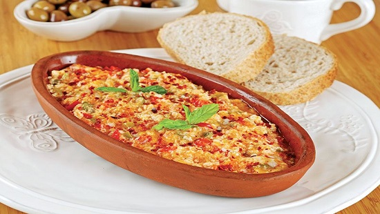
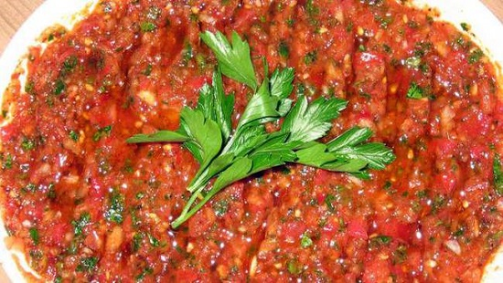
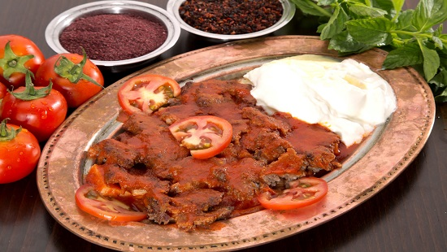
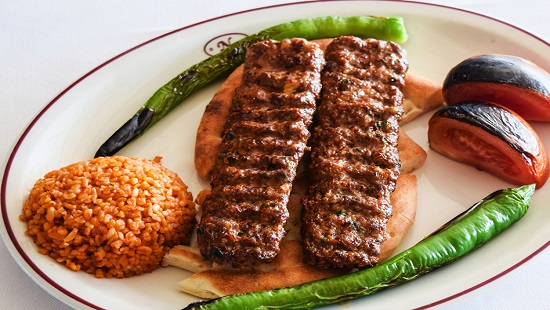
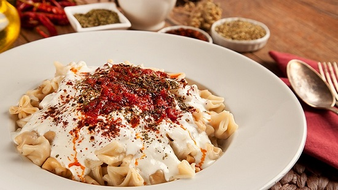
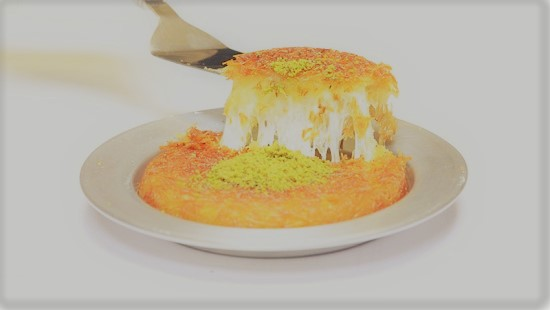
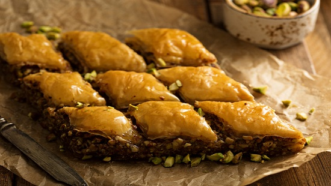
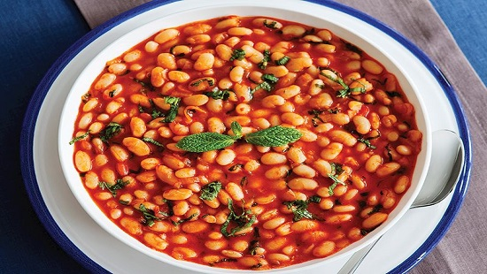

Turkish Breakfast

The breakfast habits of Turks are slightly different than the Europeans’. For starters, tea replaces the coffee. Also sliced tomatoes and/or cucumbers are a must for a Turkish breakfast. The rest of the elements are similar. The most common type of bread is white bread. However, in an attempt to eat healthier, different kinds of grain breads like rye are commonly available these days.
White cheese (similar to feta), old cheese (kaşar peyniri), black and/or green olives (zeytin), butter, thick cream (kaymak), honey, jam, an omelet or boiled eggs (yumurta) are regular players of the game.
The surprise ingredients are sucuklu yumurta and börek. These two are the most common dishes served to spoil the guests. Sucuk is dried sausage made of ground beef with garlic and a variety of spices like red pepper, cumin and sumac. And cooked on a pan mostly with eggs it becomes a fatty yet delicious extravaganza. Börek is made of thin sheets of dough, filled with cheese, minced meat and/or vegetables, wrapped and baked or cooked.
I strongly suggest to have a Turkish breakfast on the coastline of the Bosphorus in the areas like Bebek, Rumelihisarı. The establishments are in a mighty competition which plays in the cards of the customers. You simply can’t go wrong in the area.
Menemen
Menemen is a delicious Turkish style omelet. Roasted onions and peppers are boiled thoroughly with tomatoes and finally mixed with eggs, herbs, parsley, pepper and grounded red pepper. A simple, cheap and easy to make dish, yet with an addictive taste. Turks order this mostly for breakfast.
The dish takes its name after the Menemen district of İzmir in the Aegean Region. Tomato, the main ingredient, was first grown in İzmir in the early 1920s. This gives an idea about the age of the famous dish. Since it is a common dish, it is only natural that it has several derivations with extra ingredients such as cheese, grounded meat, mushrooms, sucuk, sausages, even chicken or eggplants.
Places to order this delicious dish are Lades Muhallebi (Beyoğlu), Sütiş (Beyoğlu), Bebek Kahve (Bebek), Mehtap Cafe (Emirgan), and Kale Çay Bahçesi (Rumelihisarı).
Meze
Meze refers to cold starters rather than a full course. Restaurants that are experts in mezes are called meyhane. A meyhane is a traditional restaurant which serves alcoholic beverages with mezes and traditional foods. Most mezes are served as appetizers in the restaurants.
In most cases, the waiter will come to your table and present all the mezes available on a big plate for you to choose from. Each member of the dinner party will select one or more. The mezes are then put in the middle of the table and shared. Toasted bread complements the various dishes. The most commonly adored mezes are:
- Chili Tomato Paste (Ezme)
- Grilled Eggplants with Yogurt (Patlıcan Ezmesi)
- Grilled Eggplant Salad (Patlıcan Salatası)
- Fried Eggplant with Tomato Sauce (Şakşuka)
- Mint Yogurt Dip (Haydari)
- Pinto Beans (Barbunya)
- Artichoke (Zeytinyağlı Enginar)
Some of the best places to have mezes are Cumhuriyet Meyhanesi (Beyoğlu), Refik Meyhanesi (Asmalımescit), Kör Agop Meyhanesi (Kumkapı), Giritli Restoran (Ahırkapı), and Münferit (Beyoğlu).
Iskender Kebap
İskender Kebap is actually döner meat. Döner is a dish of beaten pieces of meat seasoned with suet, local herbs and spices, skewered on a spit and grilled vertically. Leaves, thinly sliced pieces of döner, are served on pieces of pide, a pita like bread. Pide pieces are dressed with butter and tomato sauce.
Yogurt is added to the side of the plate, and if you please extra tomato sauce and butter to make it even more delightful. Bursa is the hometown of this heavenly saucy meat dish. My personal favorite is a small and modest looking Bursa Kebapçısı in Atıf Yılmaz Street in Beyoğlu. The name of the master is on the sign of the restuarant, Kazım Erdem.
Adana Kebap
This kebap is a must if you are a meat enthusiast. It takes its name after the city of Adana, located in the southeast of the country. Adana kebap has had “Controlled Designation of Origin” since 2009. An original Adana kebap can only be made by establishments who are inspected on the spot and approved by the Adana Chamber of Commerce.
The ingredients are few, yet the process of preparing and cooking are specific. The essential ingredients are the lamb meat and the tail fat. Traditionally, it has to be the meat of a male lamb that is younger than one year of age. The animal has to be grown in its natural environment and fed with the local flora. After a detailed cleansing and resting process, the meat is kneaded with dried red and green hot pepper and fresh local red peppers, brochette mounted on the skewers, charcoal grilled and served on lavaş (a pita like thin bread) with grilled onion, tomato and green pepper on the side.
You can order Adana kebap at Adana Sofrası Ciğer ve Kebap Salonu (Beşiktaş), Adana Yüzevler (Etiler), Kebapçı Enver Usta (Beyoğlu-Tünel), and Zübeyir Ocakbaşı (Beyoğlu). Adanalı Yusuf Usta is both the name of the place and the owner/master of the modest looking yet incredibly successful restaurant. It is a little off the track, out of the tourist attraction areas, however for a true meat aficionado a 30 minute drive to the Avcılar district is definitely worth it.
Lüfer

If you ask any local what to eat in the city, he will most definitely put fish in the top 5. The combination of rakı and fish by the Bosphorus is like a weekend ritual. Instead of rakı (the anise flavored strong beverage) you can of course pick your own drink. Still, there is the matter of which fish to order? The answer may vary according to taste, but lüfer is a brilliant choice if you ask me.
Lüfer comes from the Pomatomidae family. A rather big, very tasty and additionally easy to clean and eat fish. The younger lüfer is called sarıkanat, even more luscious if it is available. If you like fish, our listing of the top 10 fish restaurants in Istanbul is required reading.
Mantı
Often called Turkish ravioli, mantı is a hot dish served with cold yogurt and garlic. You can think of mantı as some kind of dumplings consisting of the dough and its filling. In the classical Anatolian (Kayseri) style, the dough is made of water, flour and salt. Some add eggs to increase the flavor. The thinner the dough and the smaller the wrapped pieces are, the more masterful the cook is. The filling contains grounded beef or lamb, onion, salt and pepper.
These days you can order mantı with salmon, spinach, or even chicken. Whether mantı is boiled in water, baked with butter, or boiled in tomato sauce, it is served with yogurt, garlic and tomato sauce cooked with butter. Adding some spices is very common. My regular choice is a combination of grounded red pepper, mint and sumac.
Some of the pleasing places to order mantı are Casita Mantı Nişantaşı (Şişli), Fıccın (Beyoğlu), Emek Mantı (Yeniköy), Bodrum Mantı (Arnavutköy), and Aşkana (Ulus).
Künefe
Künefe is a traditional Arab cheese pastry. The unsalted cheese in between the two layers of kadayıf is the essence. Kadayıf are thin fibers of dough, a simple mix of water and flour. It is served warm because it is freshly baked and soaked in syrup.
This Turkish dessert has an amber color and is dressed with the grounded pistachio on top. The cheese melts inside and when you take a bite you sense different textures, such as the soft cheese and the crusty dough. I also like the way the cheese sooths the heavy sugary taste.
Baklava
Baklava is the finest example of the Turkish dessert passion. The ingredients (phyllo dough, nuts and syrup) are simple, yet craftsmanship is most definitely required. The thinness of the dough layers is crucial. The nuts, walnuts, hazelnuts or pistachios, vary from region to region in Turkey.
The nuts are spread in between the layers of phyllo dough. Then the pile of dough is dressed with butter, baked and finally soaked in syrup. You need to pick a good place to eat your baklava since it definitely has to be fresh and masterfully made. There are some accomplished places to eat baklava, like Güllüoğlu or Köşkeroğlu.
Kuru Fasulye
What is so special about haricot beans? Well you are right, it doesn’t sound very festive. But here it comes. Such a simple ingredient can have such a velvety texture if cooked expertly with other good quality ingredients — butter, tomatoes, and tomato paste. It can be cooked with or without meat or even with dried spiced thin slices of beef called pastırma.
The whole deal of having kuru fasulye with pilav (plain rice) and pickles makes me feel like I am a part of this culture and tradition. The best places to have this experience are the restaurants across Süleymaniye Mosque.